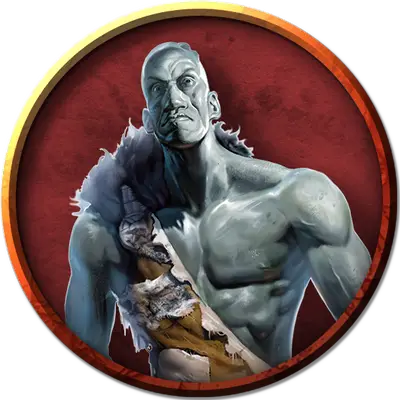

Статуя каменного великана
Stone Giant Statue
Огромный Конструкт, без мировоззрения

Класс Доспеха 17 (природный доспех)
Хиты 195 (17к10 + 102)
Скорость 30 футов
| мод | спас | ||
|---|---|---|---|
| СИЛ | 22 | +6 | +6 |
| ЛОВ | 9 | −1 | −1 |
| ТЕЛ | 20 | +5 | +5 |
| мод | спас | ||
|---|---|---|---|
| ИНТ | 3 | −4 | −4 |
| МДР | 11 | +0 | +0 |
| ХАР | 1 | −5 | −5 |
Иммунитет к урону психическая энергия, яд; дробящий, колющий, рубящий от немагических атак, кроме нанесённых адамантиновым оружием
Иммунитет к состояниям паралич, очарование, отравление, окаменение, истощение, испуг
Чувства тёмное зрение 120 футов, пассивное Восприятие 10
Языки Понимает языки своего создателя, но не говорит.
Опасность 0
Бонус мастерства +2
Особенности
Неизменяемая форма. Голем обладает иммунитетом ко всем заклинаниям и эффектам, изменяющим его облик.
Сопротивление магии. Голем совершает с преимуществом спасброски от заклинаний и прочих магических эффектов.
Магическое оружие. Атаки оружием голема являются магическими.
Описание
Стоящая в алькове в восточном конце коридора статуя каменного гиганта в натуральную величину излучает ауру магии преобразования. Это можно увидеть, использовав заклинание обнаружение магии [detect magic]. Руки великана с раскрытыми ладонями протянуты к западному концу коридора.